Admin guide
Audience · AdministratorCreating Administrators
Administrator profiles control who can manage DeJAVU data at the Junior Achievement Africa enterprise and in each organisation (for Phase 1: JA Africa Volunteer University). This guide covers admin types, configuration and limited roles, creating an enterprise admin, attaching them to organisations, and creating an organisation admin.
Path: People → Administrators · Docs: BI administrator profiles
Admin types and what they can do
Organisation-level roles (used inside a sub-account such as JA Africa Volunteer University):
Full — All menus and features in that organisation. No menu restrictions.
Limited — Only the menus allowed by a Limited Admin Role (what they can do). Does not limit which volunteers they see.
Module — Access only to selected modules (Volunteer, Client, Donor, Member). No fine-grained menu checklist like Limited.
No System Access — Profile exists for contact / notifications only; they cannot use the admin menus.
Enterprise-level roles (Junior Achievement Africa umbrella):
Full Enterprise Admin — Full enterprise features, including managing organisation admins (when enabled), Security Groups, and Configuration Admin Roles.
Enterprise Security Group Admin — Limited to the organisations in the assigned Security Group(s) — controls where.
Enterprise Configuration Admin — Configuration menus only, as defined by a Configuration Admin Role — controls what. Upgraded enterprises only.
Roles vs Security Groups: Configuration / Limited roles = what menus. Security Groups = which organisations. Limited / Module / No System Access do not exist at enterprise level.
JA Africa default: Day-to-day country work uses organisation admins on JA Africa Volunteer University (often Full or Limited roles such as Country Admin). Enterprise Full is for regional platform owners. Sample guide accounts below use Configuration Admin and Limited Hours Reviewer so you can see restricted options without changing production config.
Where administrators live in the menus
In the Junior Achievement Africa enterprise, open People → Administrators. You will see Security Groups, Organisation Limited Admin Roles, Enterprise Configuration Admin Roles, Enterprise Administrators, and Organisation Administrators.
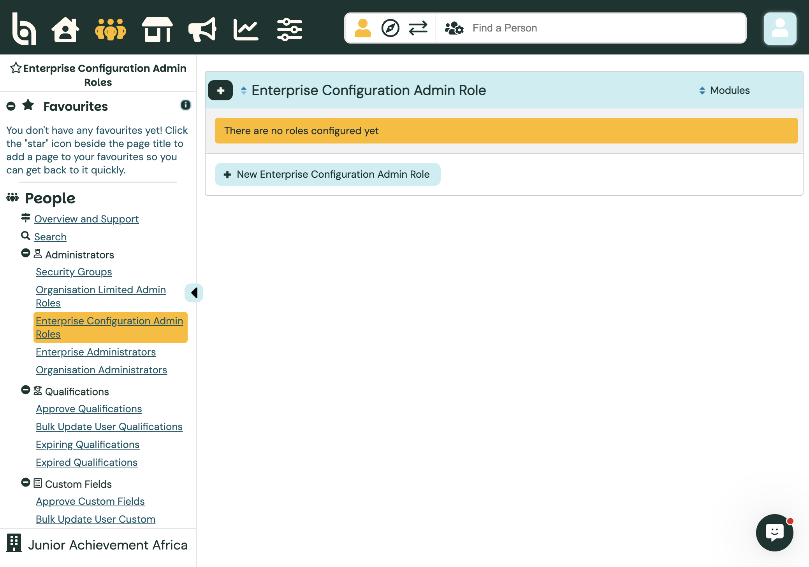
AdministratorsInside an organisation account (for example JA Africa Volunteer University), the same area is simpler: Add an Admin, Manage Administrators, and Limited Admin Roles.
Example: Enterprise Configuration Admin Role
Path: People → Administrators → Enterprise Configuration Admin Roles → + New Enterprise Configuration Admin Role.
Sample role: DeJAVU Guide – Branding & News — Volunteer module; branding / news style capabilities only (for the guide). Do not use this sample role for live production staff without reviewing capabilities.
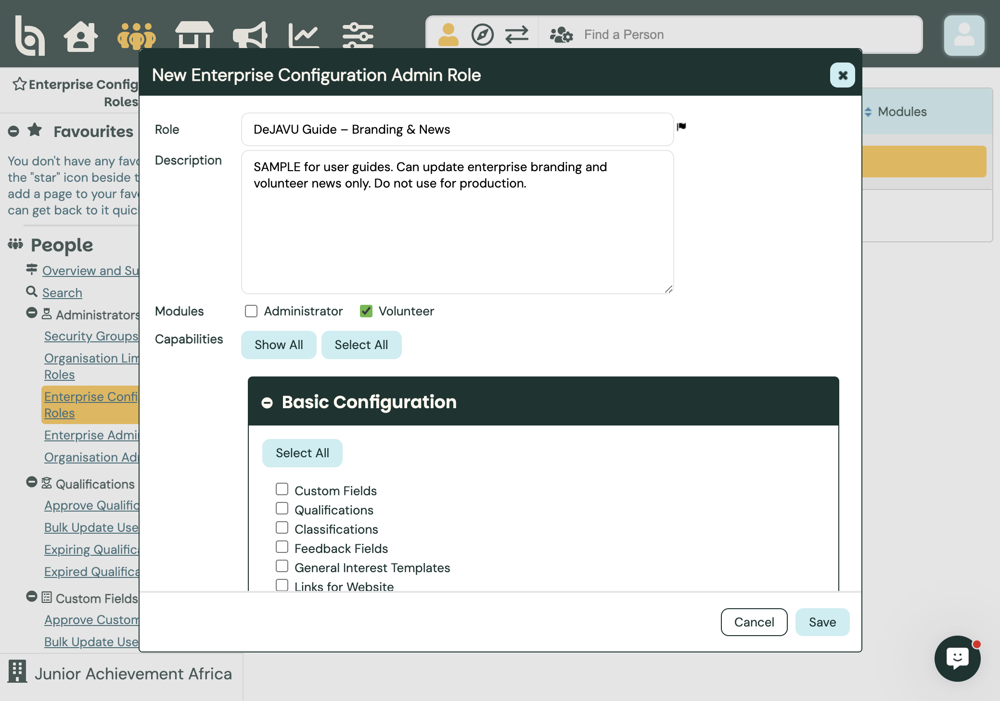
Role name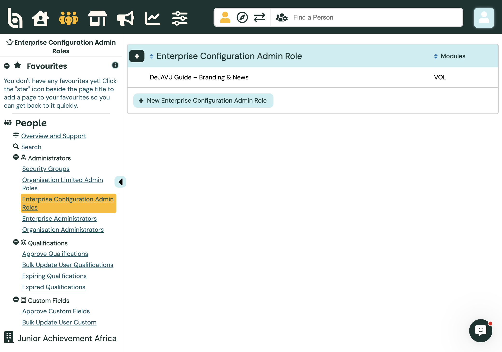
Saved roleOther BI options: Tick Administrator and/or Volunteer modules; pick only the configuration capabilities that person needs (custom fields, qualifications, regions, surveys, and so on). Full Enterprise Admins do not need a Configuration Admin Role.
Example: Organisation Limited Admin Role
Path (enterprise): People → Administrators → Organisation Limited Admin Roles → + New Organisation Limited Admin Role. Roles created here are available to every sub-account.
Sample role: DeJAVU Guide – Hours Reviewer — Volunteer module, focused on hours / feedback style menus (for the guide).
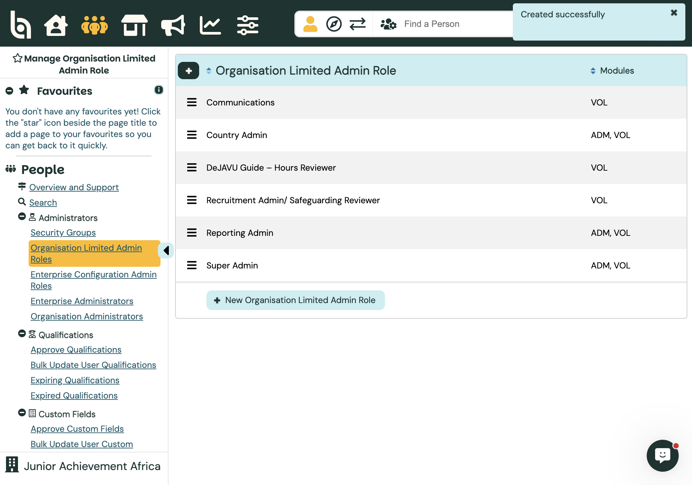
Hours ReviewerJA Africa defaults already on the list: Country Admin, Recruitment Admin / Safeguarding Reviewer, Reporting Admin, Communications, Super Admin. Other BI options: Create roles at enterprise (shared) or inside one organisation’s People → Limited Admin Roles (local only). A Limited Admin can only have one Limited role at a time.
Create a sample Enterprise Administrator
Path: People → Administrators → Enterprise Administrators → + Create Enterprise Administrator.
Fill required contact fields (flag icons), set a unique username (12+ characters), and a strong password. Under Role, choose Configuration Admin and select DeJAVU Guide – Branding & News (or leave Full Administrator for unrestricted enterprise access).
Sample created: Guide EntAdmin · username dejavuguide.entadmin ·
type Configuration Admin – DeJAVU Guide – Branding & News.
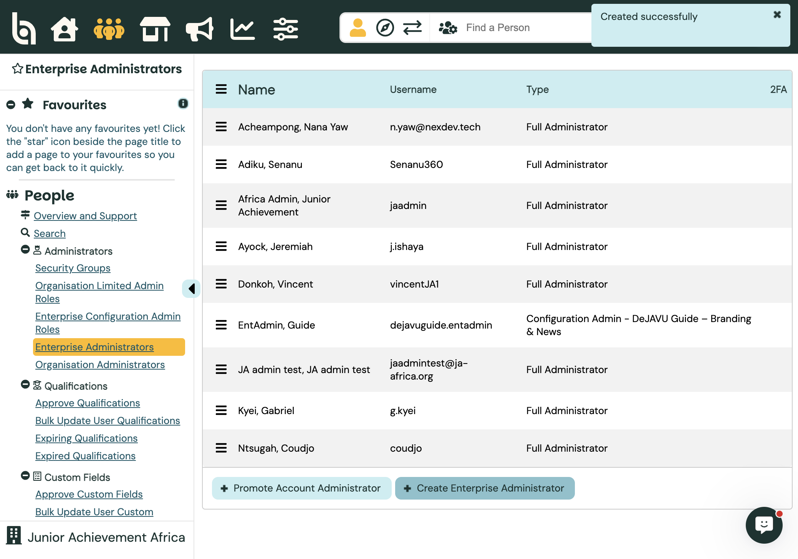
Sample enterprise adminOther BI options: Full Administrator; Security Group + group name; or promote an existing organisation admin with + Promote Account Administrator. Share login details manually — Better Impact does not email the new password for you.
Attach the enterprise admin to organisation accounts
An enterprise-only profile cannot work inside a sub-account until you attach them. Path: People → Organisation Administrators → search by username → Options → Manage … access.
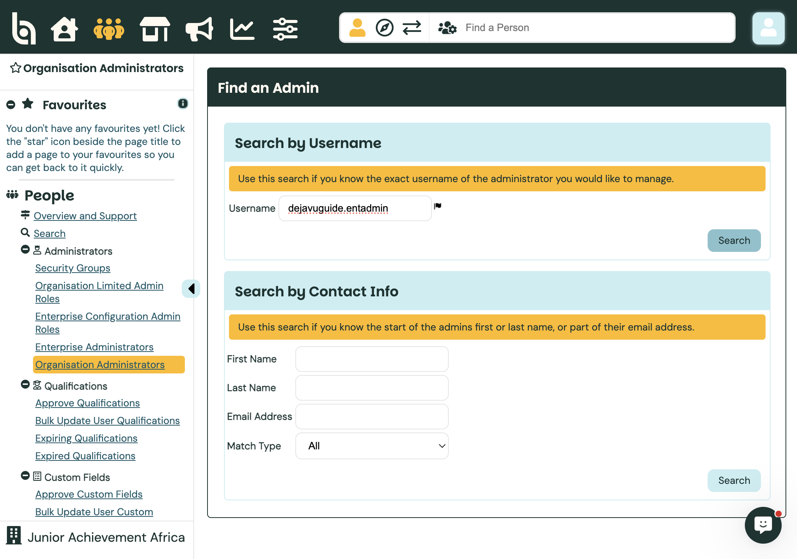
Search username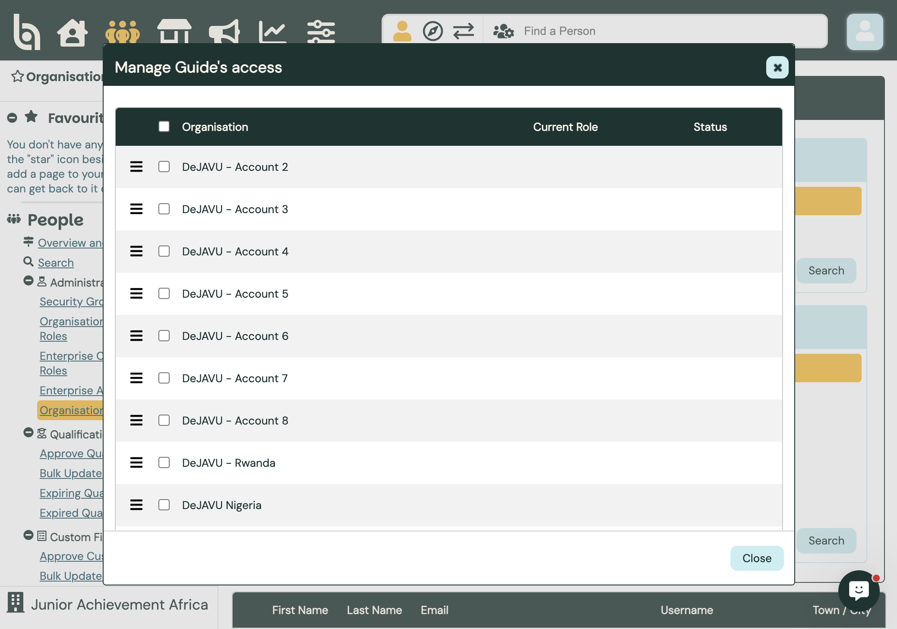
Tick organisationsTick the organisations (example: JA Africa Volunteer University and DeJAVU – Rwanda), choose Add or Update Admin Role, set Type (for example Limited) and Role (for example Hours Reviewer), then Save.
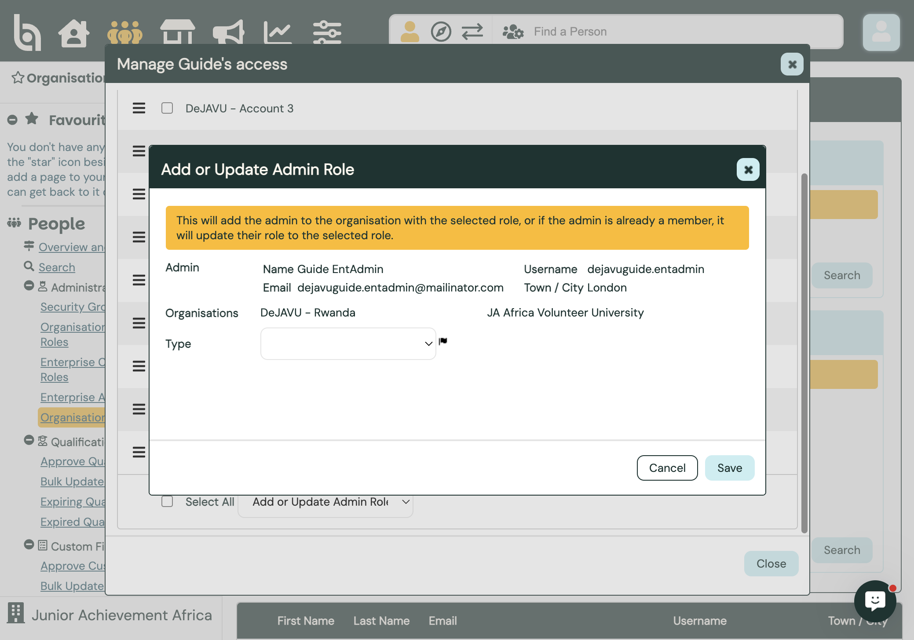
Type and role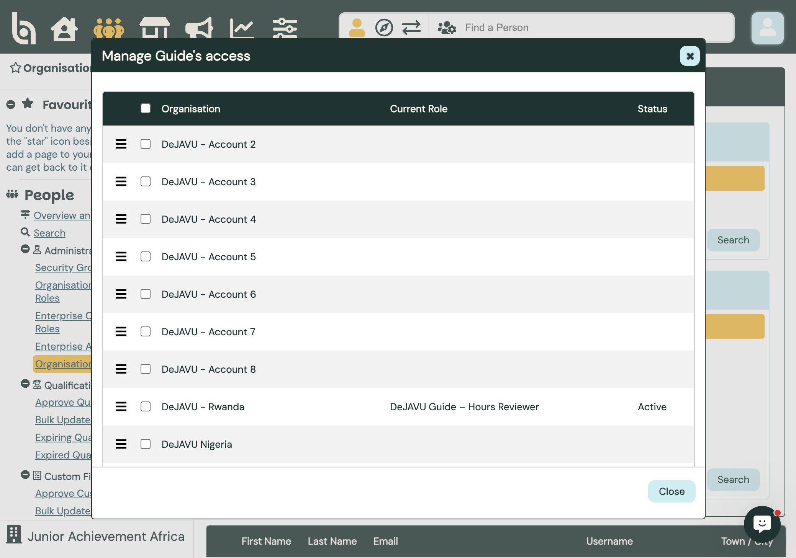
Active on orgsAfter attach, the same person appears under that organisation’s Manage Administrators list with the org-level role you chose.
Create an Organisation Administrator (example)
Switch into the organisation account (Phase 1: JA Africa Volunteer University). Path: People → Administrators → Add an Admin.
 Add an Admin
Add an Admin
Complete Contact Information, then under Settings → Administrator Role choose Limited and DeJAVU Guide – Hours Reviewer (or Full / Module / No System Access). Leave notification checkboxes as needed, then Save.
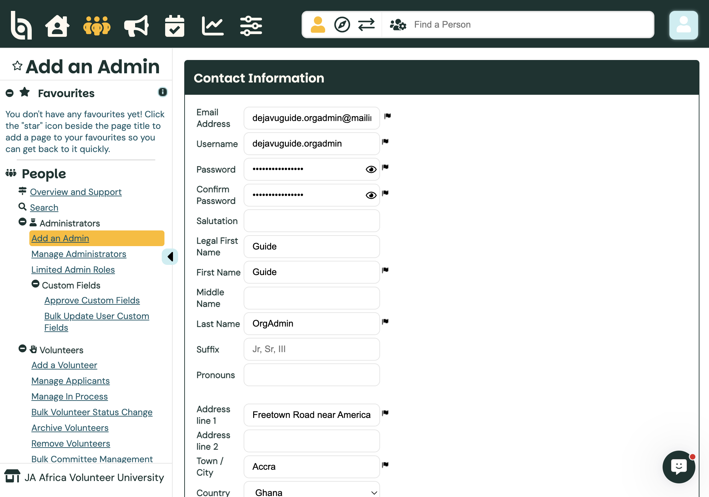
Contact details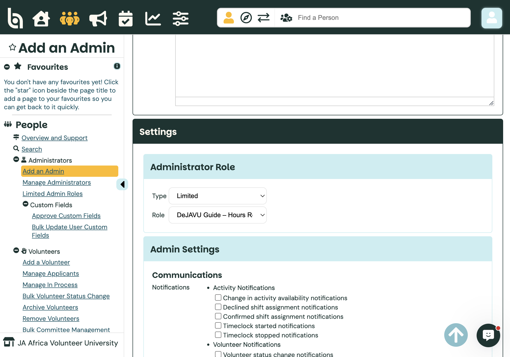
Limited + role
Sample created: Guide OrgAdmin · username dejavuguide.orgadmin ·
Limited – DeJAVU Guide – Hours Reviewer on JA Africa Volunteer University.
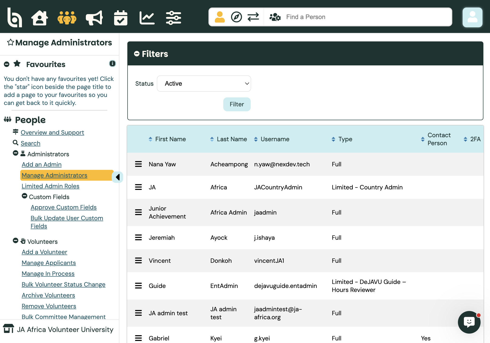
Both sample adminsOther BI options: Promote a volunteer to administrator from their profile (Main → Miscellaneous → Administrator), or change role later via Options → Update Administrator Role. You can also archive or remove admins from Manage Administrators.